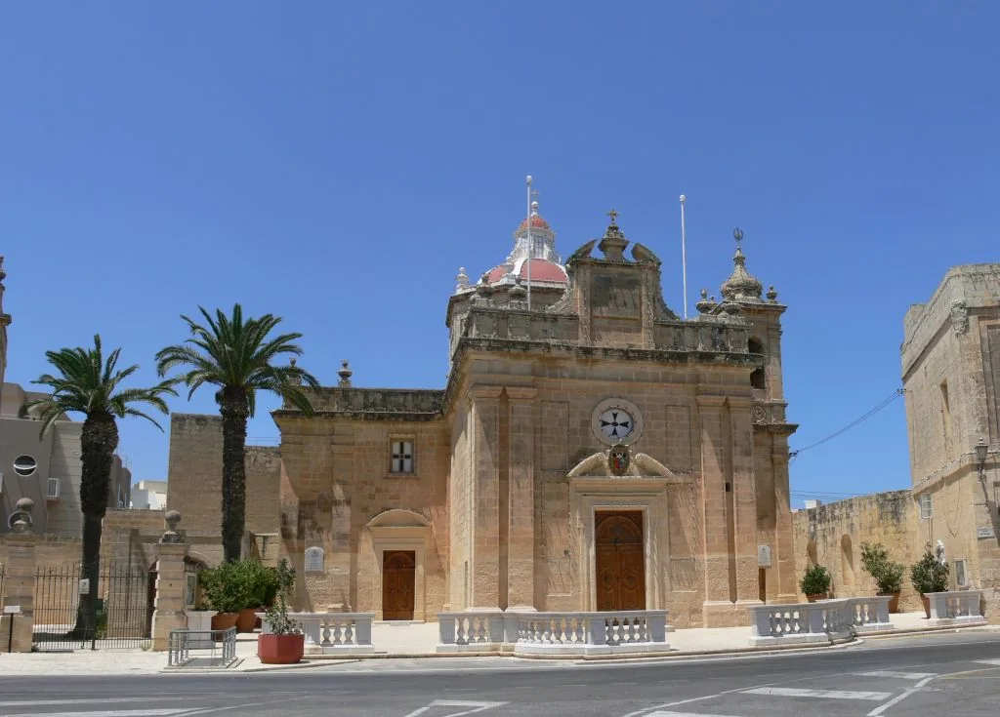

Route 73
The Valletta–Żurrieq route lists Safi stops including Midri and Puniċi. Use the operator’s timetable to match your direction and check for diversions.
Malta Public Transport timetable ↗St Paul’s church fronts Safi’s parish square. At Sir Alexander Ball’s Garden, a long stone path and its trellis give the village a second landmark, with a history of its own.

The national heritage inventory identifies St Paul’s church as item 01883 on the village square. Safi’s council traces the village’s parish history back to Bir Miftuħ, in present-day Gudja. The church exterior and the square give that history a place on the map.
For an interior visit, check locally before going. The parish centre is a separate building. A January 2026 public-works update described its regeneration while work was still under way.
Council history of the parish ↗Find Ġnien tal-Kmand on Triq Ta’ Ġawhar. The Safi council describes a walled garden with a central path and a trellis on stone columns. The EU CAP Network documents restoration work to support its use by the community.
The council describes the garden as open to the public. Check current gate hours locally before you set out.
The garden restoration project ↗
Use the village name and the full street address when looking up a stop, venue or service.
The Valletta–Żurrieq route lists Safi stops including Midri and Puniċi. Use the operator’s timetable to match your direction and check for diversions.
Malta Public Transport timetable ↗Ħal Safi is in the centre’s catchment. Use Primary HealthCare’s directory to check service locations and appointment arrangements before attending.
Primary HealthCare directory ↗The MTA bar register lists Il Mulino at Triq il-Menqa under BAR-15953. Check directly with the venue for current service, menu and hours.
MTA bar register ↗The marker identifies the parish church. The garden is on Triq Ta’ Ġawhar, to the east of the square.
Map data © OpenStreetMap contributors.
Reviewed 16 November 2026. The Address Registrar lists Ħal Safi, Ħal Kirkop and Żurrieq as separate localities in the Western Region. The dated photographs document the landmarks and their setting at the time they were taken.